AI 生图
按步骤了解页面布局、四种创作模式，以及如何查看、下载和继续编辑结果。
1. 进入页面与布局
在顶部或左侧导航中点击「AI 生图」，即可进入创作页。未登录时，部分操作会先弹出登录框。
页面分成左右两块：
- 左侧：选择模式、模型、提示词和参数，并提交任务。
- 右侧：查看生成任务、筛选结果，并对单张图片继续操作。
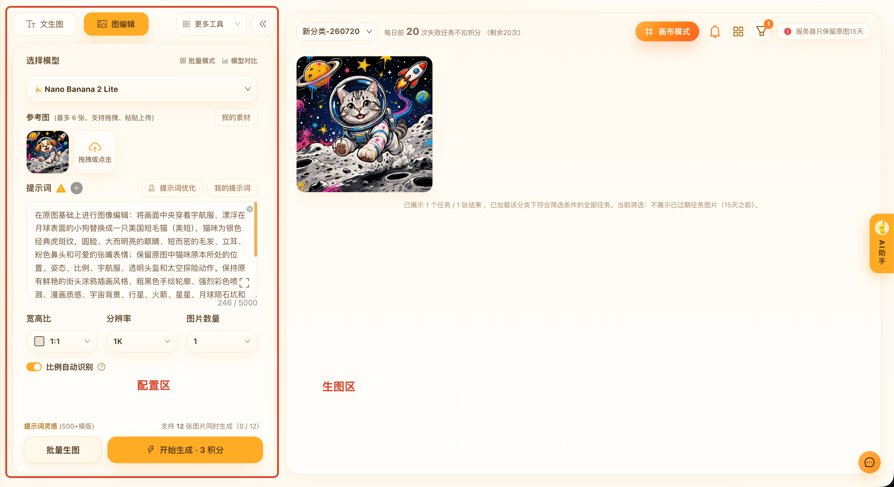
2. 选择创作模式
左上角可以切换创作方式。常用的「文生图」「图编辑」直接显示；「提示词反推」和「局部重绘」在右侧工具下拉里。
- 文生图：只写文字，直接出图。
- 图编辑：上传参考图，再结合提示词生成新图。这是进入页面后的默认模式。
- 局部重绘：在原图上涂抹要改的区域，只重绘这一块。
- 提示词反推：上传一张图，让系统帮你写出可用的提示词。
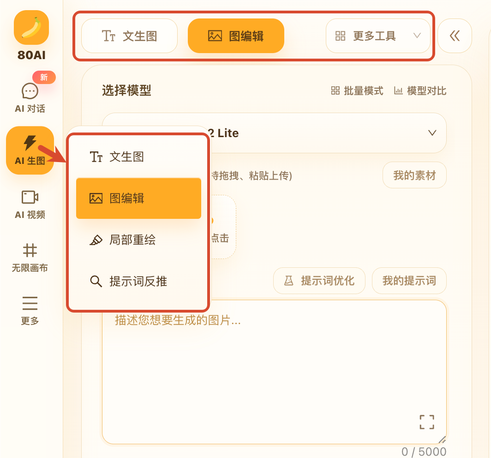
3. 文生图
适合从一句话或一段描述开始试想法。建议按这个顺序操作：
- 切换到「文生图」。
- 选择模型。不确定时，可先看「模型对比」。
- 在提示词框里描述画面，例如主体、风格、光线、构图。
- 选择宽高比、分辨率和一次生成的图片数量。
- 点击「开始生成」。按钮上会显示本次预计消耗的积分。
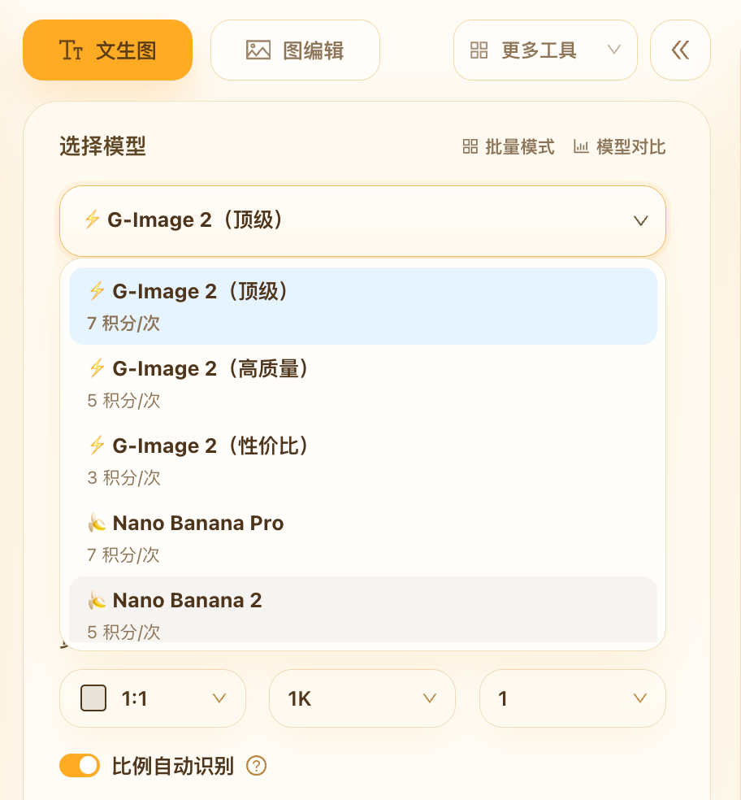
4. 图编辑
适合在已有图片上继续改风格、换背景、换服装或延伸构图。图编辑必须先有参考图。
- 切换到「图编辑」。
- 上传参考图：支持点击、拖拽或粘贴。也可以从「我的素材」里选用已保存的图。
- 写明你希望保留什么、改成什么。
- 按需要调整模型、比例和数量，再点击「开始生成」。
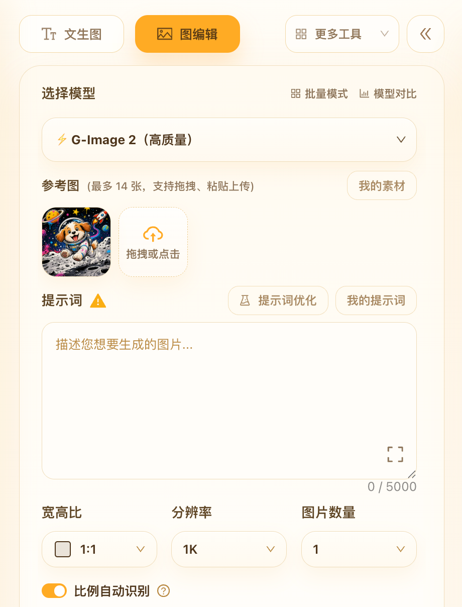
参考图数量上限由当前模型决定。上传成功后，可以把常用图点「加入我的素材」，下次就不用重新找文件。
5. 局部重绘
只想改画面里的一小块时，用局部重绘比整图重做更合适，例如改表情、换道具、修细节。
- 在工具下拉里选择「局部重绘」。
- 上传需要修改的原图。也可以从结果图直接点「局部重绘」带入。
- 在画布上涂抹要重绘的区域。
- 写下重绘后希望看到的效果，再提交。
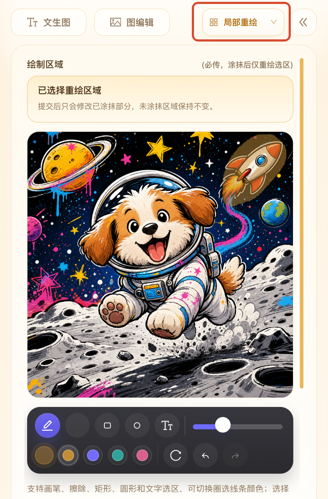
6. 提示词反推
看到一张喜欢的图、但不知道怎么描述时，可以用提示词反推。反推会消耗积分，按钮上会显示预计费用。
- 在工具下拉里选择「提示词反推」。
- 上传参考图片，点击「开始反推」。
- 结果会显示在左侧，可以复制，或点「带入文生图」继续出图。
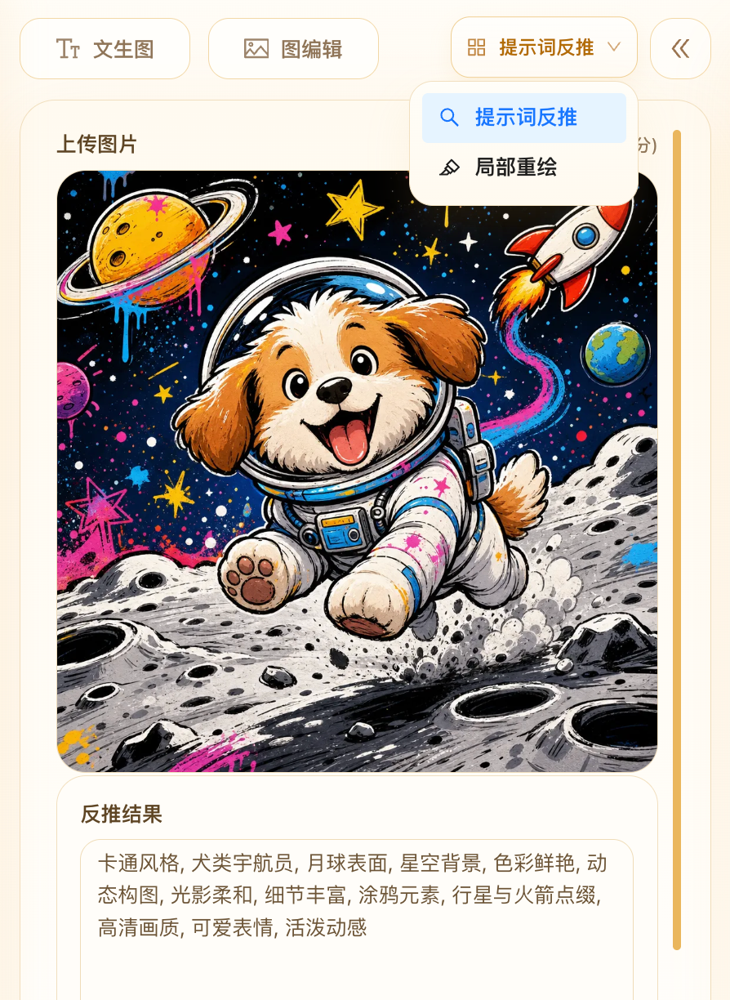
7. 提示词工具
提示词框附近还有几个常用辅助功能：
- 提示词优化：免费。保留原意，并结合参考图理解画面，补全构图、光线、画风等细节。
- 我的提示词：保存和复用自己常用的写法，也可以把当前提示词一键加入。
- 放大编辑：把提示词放到更大的编辑区里改。
- 提示词灵感：查看更多现成写法，适合快速起步。
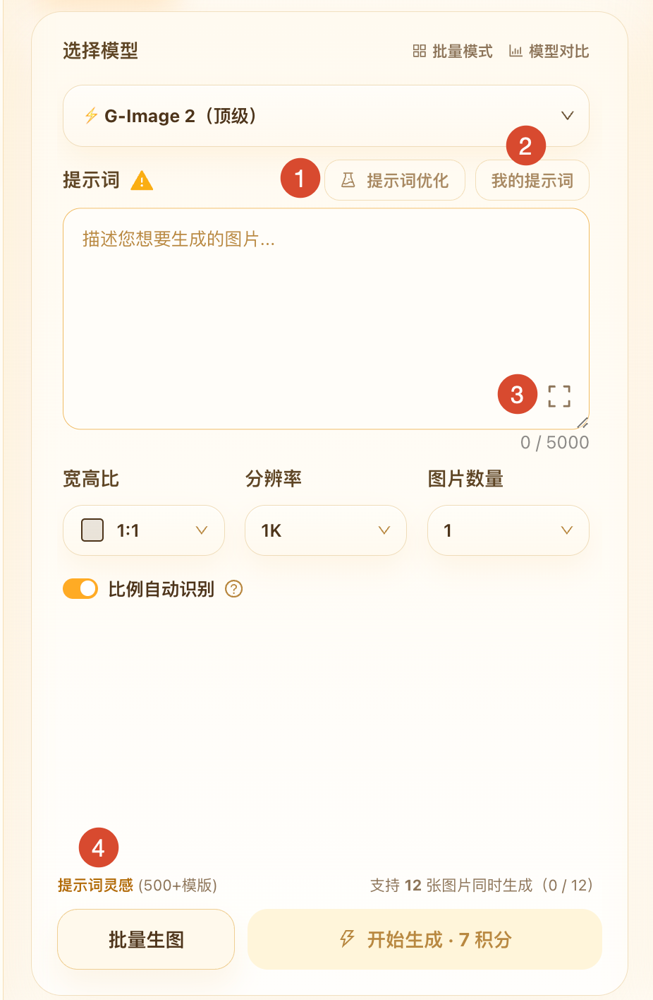
8. 模型与参数
不同模型在细节、文字和速度上不一样。不确定时，先点模型旁的「模型对比」看推荐场景。
- 选择模型：按成品质量、速度和积分成本来选。日常可先用性价比较高的模型试方向，定稿再用更高质量的模型。
- 宽高比：决定画面横竖和构图。图编辑时可打开「比例自动识别」。
- 分辨率：更高更清晰，通常也更耗积分。部分模型会提供自定义尺寸。
- 图片数量：一次可发 1 到 12 张，会占用对应数量的并发名额。
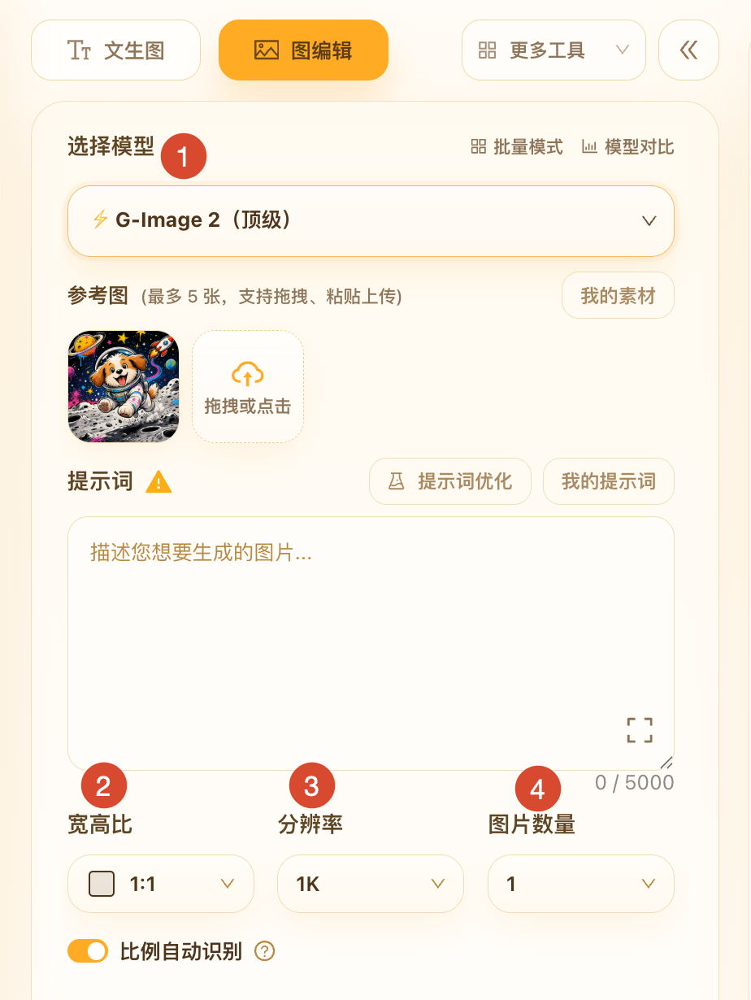
9. 开始生成
参数准备好后，点击左下角「开始生成」。按钮上会显示本次预计消耗的积分。积分不足时，按页面提示购买或兑换即可。
- 提交后，任务会出现在右侧「生成任务」面板。
- 左侧内容不会被清空，可以马上改提示词或参考图，再发下一个任务。
- 最多支持 12 张图同时生成。想连续出多张时，也可点开「批量模式」看说明。
- 每天前 20 次失败通常不扣积分，具体以页面提示为准。
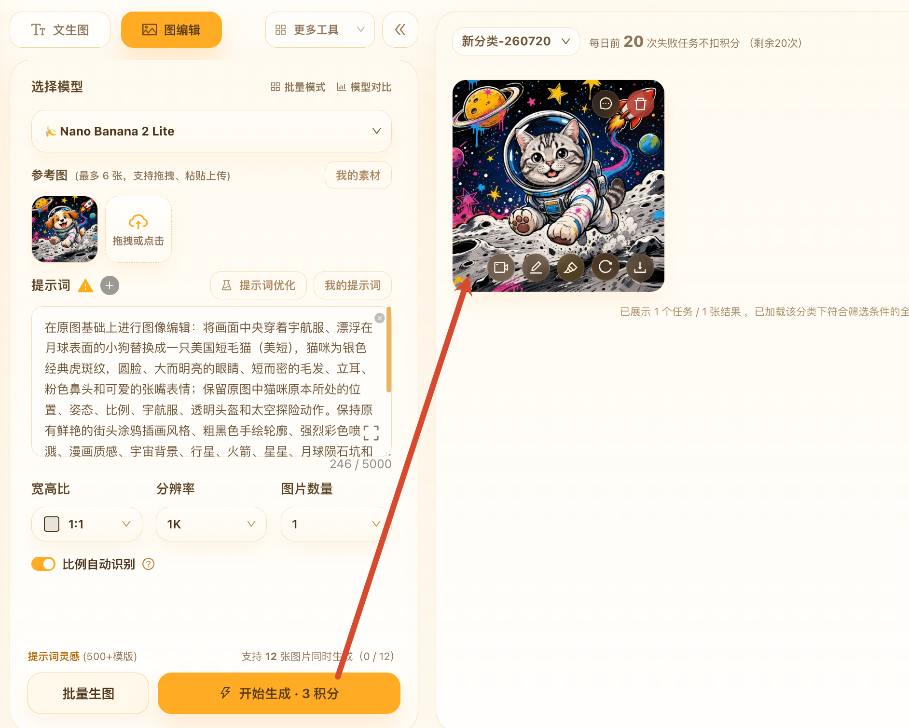
10. 查看与处理结果
右侧可以按类型、模型、状态、日期、来源或提示词筛选任务。也可以改卡片形状和每行列数，方便对比。
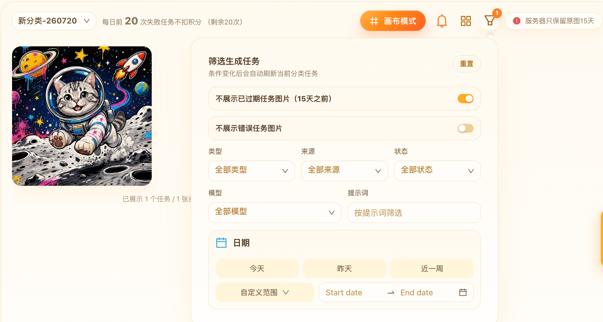
把鼠标移到结果图上，可以继续处理：
- 预览：点击图片查看大图和任务详情。
- 下载原图：保存本地。服务器保留原图 15 天，重要结果请及时下载。
- 结果图编辑：把当前结果带到图编辑，继续改。
- 局部重绘：只改这张图的局部。
- 重新生成：用当前参数再跑一次。
- 生成视频：把这张图带到 AI 视频页继续做。
- 反馈：结果有问题或不符合预期时，可以直接提交反馈。
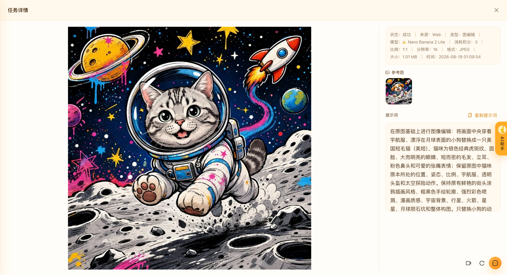
结果区还有「画布模式」入口，适合把多轮尝试放到无限画布里继续组织。
11. 素材、看板与历史
常用图和常用提示词不用每次重找：
- 我的素材：把参考图或满意结果加入素材库，之后在生图、视频、画布里都能选用。素材会长期保存。
- 看板分类：在右侧「选择分类 / 新建分类」里，把任务按项目或主题分开看。
- 创意模版：从「更多 → 创意模版」浏览现成效果，点「使用此模版」会跳回生图页并带入参数。
- 历史图片：从「更多 → 历史图片」回看过往任务。需要登录。可按提示词查找，也能重新编辑或批量下载。
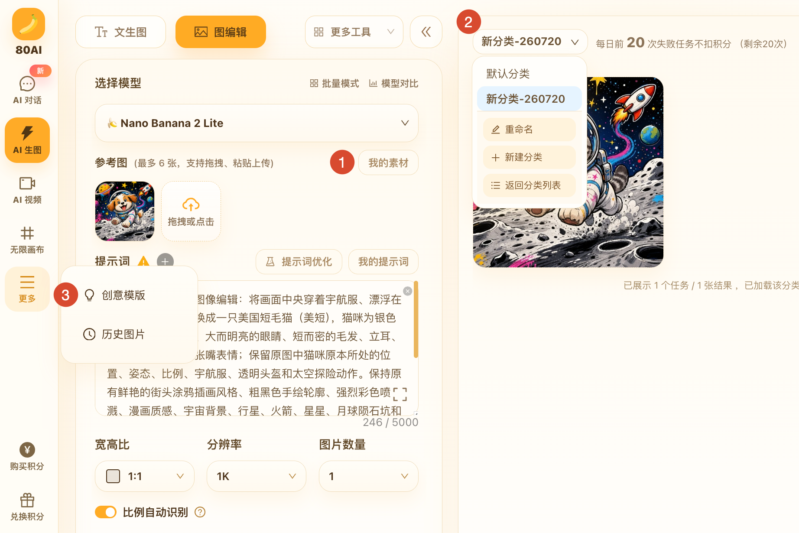
12. 批量生图
需要一次准备多组提示词或参考图时，点击左下角「批量生图」，进入批量页面。它和「批量模式」不是一回事：批量模式是在当前页连续提交；批量生图是单独的多卡片页面。
- 先设好全局模型、比例等共用参数，需要时点「应用到全部卡片」。
- 为每张卡片填写提示词，或补上各自的参考图。
- 确认后点击「开始批量生成」，在卡片上查看每组进度和结果。
- 完成后可以下载结果，或清空已完成 / 失败的卡片。
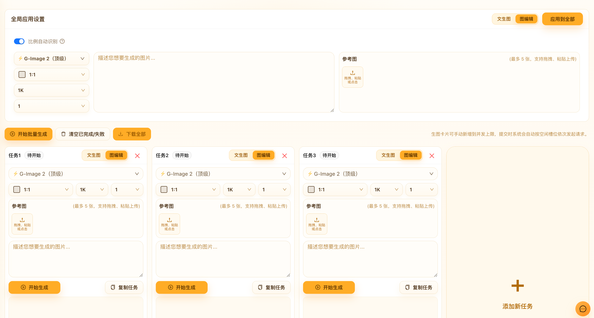
13. AI 助手联动
在生图页右侧可以看到「AI助手」。登录后点开，就能边聊边改提示词。
- 对话里如果出现适合出图的描述，可以点「复制并去生图」，提示词会回到生图页。
- 助手也可能直接给出「确认生图」卡片。你可以改模型、张数和比例，看预计积分后再确认。
- 需要更完整的会话记录时，点「在对话页打开」。
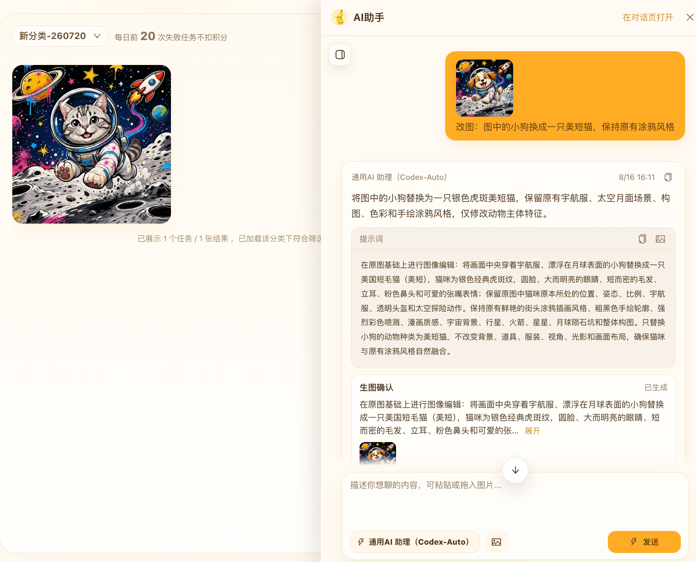
14. 使用建议
- 第一次用，可以先去「更多 → 创意模版」套用模板，再回到生图页微调。
- 整张风格要变，用图编辑；只改一块内容，用局部重绘。
- 提示词写不好时，先反推或优化，再自己改一版。
- 常用参考图放进「我的素材」，常用写法放进「我的提示词」。
- 原图有 15 天保存期限，满意的结果建议马上下载。
- 多轮对比、分支试错时，可以从结果区进入「画布模式」。